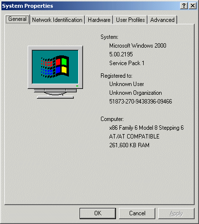
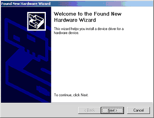
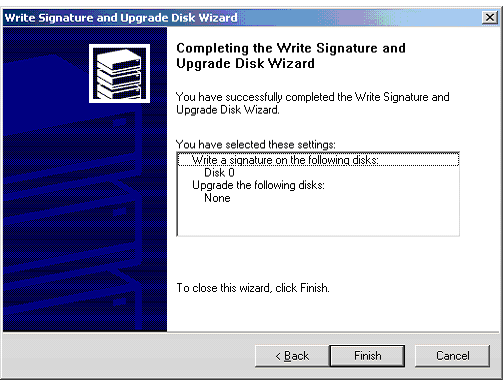
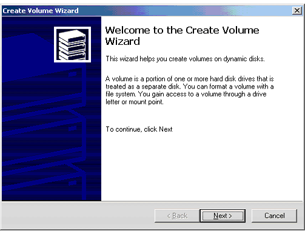
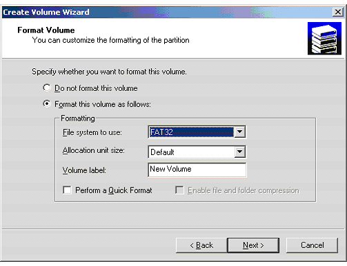
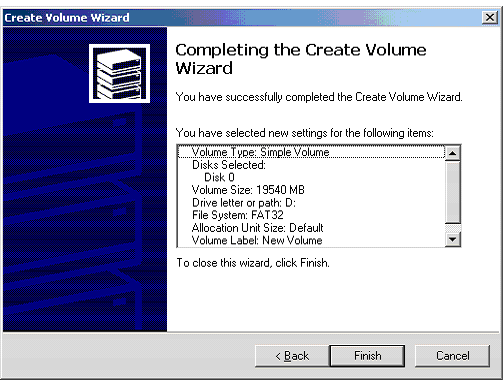

How to Install the Xbox Game Disc Emulation Software for the First Time
The Xbox Game Disc Emulation software helps developers
understand disc access patterns in order to determine optimal disc layout.
The system has been set up to make the emulation as transparent as possible.
This section describes how to set up the Xbox Game Disc emulation software. It is
divided into the following two parts, which you must perform in order:
- Pre-Install Setup
- Installation and Configuration of Emulator Hardware
The instructions below assume that the XDK has been installed in its default
path location. If it has not, you will need to modify the paths given below.
Note If you are installing the Xbox
Game Disc Emulation software on Microsoft® Windows® XP, please skip the
Pre-Install Setup section and proceed with Installation and Configuration of Emulator Hardware. The Pre-Install Setup
section is not applicable to Windows XP.
Note If you have already installed the
XDK on your development system prior to installing the emulator card, you must
reinstall the XDK with the card installed for the XDK to detect the card and
install its driver.
Pre-Install Setup
- Check to see if Microsoft® Windows® 2000 Service Pack 2 (or higher)
is installed. Microsoft® Windows® 2000 Service Pack 3 is recommended. If
Service Pack 2 or higher is installed, go to Installation and Configuration of Emulator Hardware. To determine which service pack, if any, is
installed, go to the desktop, right-click My Computer, and then click
Properties. You should see a window similar to the one below. If a service
pack is installed, it will be listed under
System.

- Install Windows 2000 Service Pack 3. You can download this service pack from
http://www.microsoft.com/windows2000/downloads/servicepacks/sp3/sp3lang.asp.
Installation and Configuration of Emulator Hardware
- Turn off the development system.
- Plug the XDK-DVD PCI into an empty PCI slot.
- Optionally, install the hard disk in a free drive bay slot. The Xbox Game
Disc Emulation system can use any hard disk to produce accurate game disc
emulation performance. (The hard disk provided with the XDK is not
required, but comes in handy if you do not wish to fill your regular
development hard disk with game images.)
- If you are installing the hard disk, attach it to the XDK-DVD PCI card using
the IDE cable included in the development kit. The red strip should go toward the
power supply.
- Turn the development system back on, and log on to the computer.
- Windows starts the Found New Hardware wizard. To continue, cancel and
exit the wizard.

- Install the Xbox Software Development Kit. The installation for the SDK also
installs the drivers for the hardware you added.
- Power off and restart your computer. This step must be completed before continuing. Do
not reboot the computer. It must be powered off completely. If the firmware was
updated on your PCI emulation card, simply rebooting does not apply the firmware
update correctly.
- If you did not install the hard disk, you are finished and can
ignore the rest of these intructions. If you did install the hard disk,
right-click My Computer.
- From the pop-up menu that appears, click Manage.
- In the tree view in the Computer Management window, under Storage,
click Disk Management. This should launch the Write Signature and Upgrade Disk
wizard. Click Next.
- The wizard prompts you to Select Disk to Write Signature. Select Disk 0, and
then click Next.
- The wizard then prompts you to Select Disks to Upgrade. Select Disk 0, and
then click Next.
- You should see a screen similar to the one below. Click Finish.

- Return to the Computer Management window (if necessary, right-click on My Computer,
click Manage, and then click Disk Management).
- Select the unallocated disk, right-click on it, and then click
Create Volume...
- This should start the Create Volume wizard. Click Next.

- Keep clicking Next until you are are prompted for the format volume, as
shown below:

In the Formatting pane, where you are prompted for File system to use, select FAT32, and then click Next.
- You should see a screen similar to that below:

Click Finish. Windows then formats the hard disk, which will take
several minutes. It will be finished when the Computer Management window indicates
that the new volume is "Healthy" (as opposed to "Formatting").
- If you have already installed the XDK on your development system prior to
installing the emulator card, you must reinstall the XDK with the card installed
for the XDK to detect the card and install its driver.